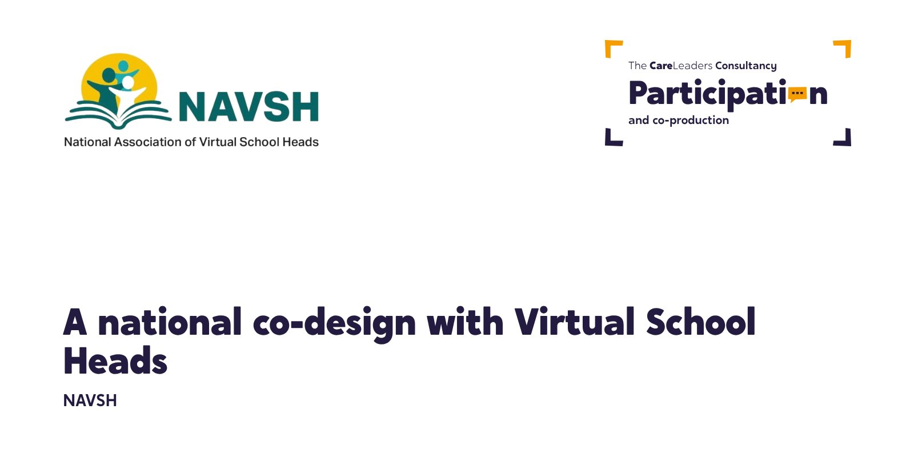
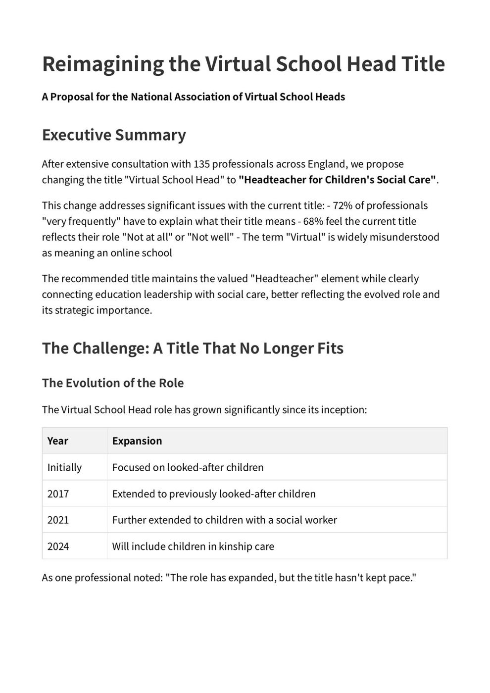
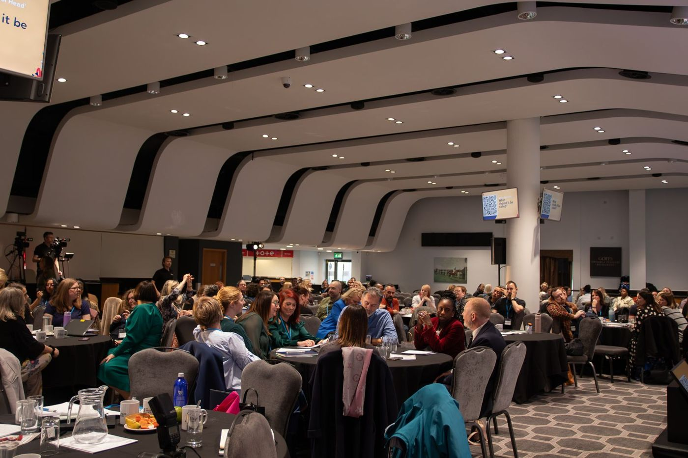
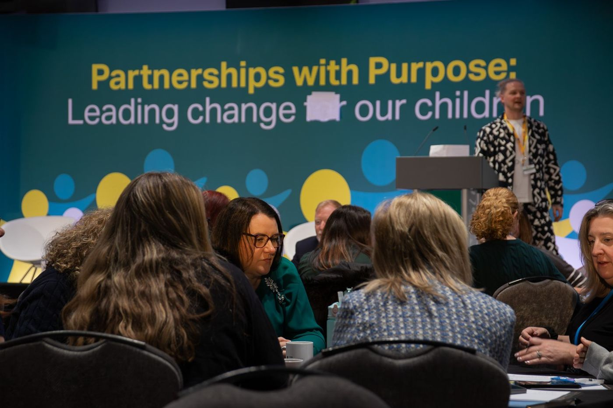
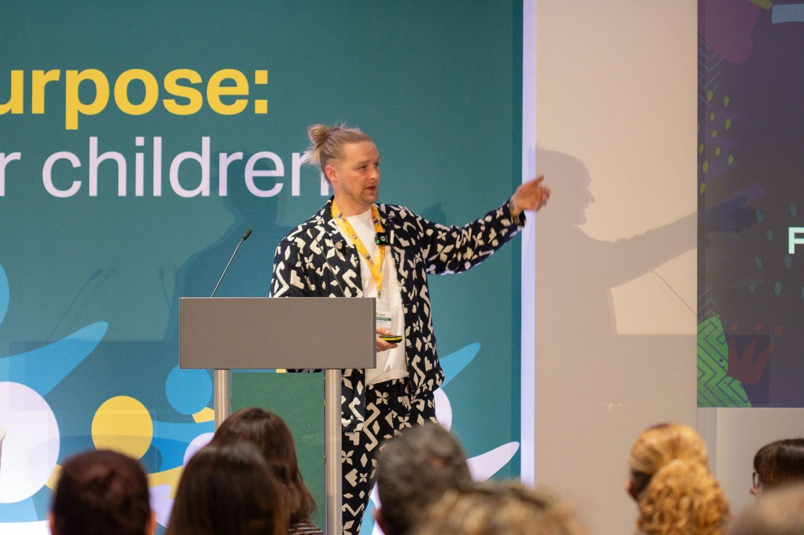
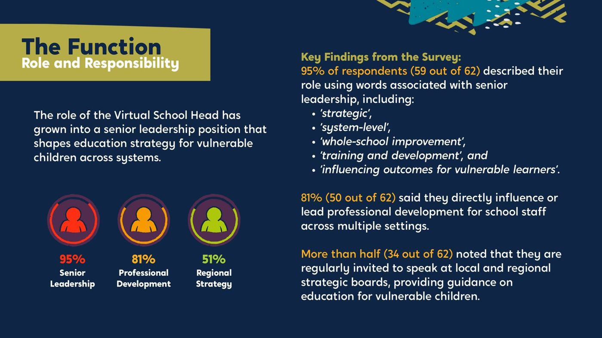

n
nNAVSH: a national co-design with Virtual School Heads on the future of their role
Virtual School Heads told us their title makes people think they run an online school. We ran a national co-design process with them, tested the options against clear criteria, and wrote up what they told us for NAVSH to take forward.

The starting point
The Virtual School Head role was created to improve the education of children in care. Since then it has grown to cover previously looked-after children, children with a social worker and, from 2024, children in kinship care. The title stayed the same. After the pandemic, “virtual” means online to most people, and Virtual School Heads were spending time explaining their job instead of doing it. NAVSH asked us to find out, with the people in the role, whether the title still works and what it should be instead.
What we heard
At the NAVSH annual conference in March 2025, around 200 delegates took part in our workshop. Each was then asked one question: what should the Virtual School Head be called? 73 answered. A four-week national survey followed and gathered 62 detailed responses. The word “Virtual” drew the most criticism: more than half said it causes confusion, with schools, families and even inspectors. The word they wanted to keep was “Head”, because schools understand it.
“Everyone thinks we run a digital school.”
What we did
- WorkshopTake the title apartDelegates designed new titles with their peers and gave us 73 answers
- ShortlistFour themesFrom strategic titles to values-led ones
- SurveyAsk the countryWhat the role does, who it serves, how often it needs explaining, and a ranking of the shortlist
- RecommendReport and pitchEvery option tested for clarity, authority, inclusivity and longevity, with a report, summary and co-branded pitch deck
How we worked
Start in the room
The first ideas came from around 200 people who do the job, not from us.
Test with the sector
The survey put a shortlist in front of Virtual School Heads across England and asked them to rank it.
Show the working
The report sets out every option we explored, what people liked about it and why it did or didn’t make the cut.
The recommendation came from the words people trusted, not a single ranked option. The two shortlisted titles that ranked best were Director of Learning and Achievement and Education Lead for Care-Experienced Children. But in open answers, “Headteacher” was the word professionals valued most, and “Children’s Social Care” covered everyone the role now serves. Before the report went to NAVSH, we asked a small group of Virtual School Heads to test it against their own experience.
What changed
NAVSH received the full report, a summary and a pitch deck to share with Virtual School Heads, local authorities and the Department for Education. The report asked all three to recognise Headteacher for Children’s Social Care as the sector’s preferred title. Virtual School leaders who reviewed it said it reflected their experience, and some wanted the title to go further and signal a more senior, system-wide role. NAVSH decided not to take a title change forward at this stage. The co-design still gave NAVSH a clear, national picture of how the role is understood, in the words of the people who do it.
Read the report
The full report sets out how the co-design worked, what Virtual School Heads told us, and the options for NAVSH to consider. The summary covers the key findings in three pages.
See the work
What we made, and what it looked like.
National workshop
The Virtual School Head title workshop at the NAVSH annual conference.
The survey
95% of respondents said the title causes confusion. The findings, presented back.
The report
The Virtual School Head title: a co-designed report to NAVSH and the sector.




